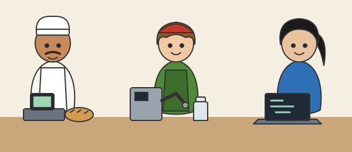

Visitors from the world of work
Learn with an AI tutor
An AI tutor explains this page to you and helps you with the exercises. Choose your assistant:
Open with Claude Open with ChatGPT Open with Mistral Vibe
You use your own account with the provider. The assistant is not offered by lernapps.net: lernapps only provides the content and the exercises. The choice holds for all pages, on this device only.
Case 2: Three guests in class 6b

© CC-BY-4.0- A the bakery's till
- B milking robot
- C laptop
From the left: Mr Kaya, baker; Ms Schulte, farmer; Ms Nguyen, computer scientist (all made up).
Case 1 is settled. On the first page you went over computer systems. Now Ms Berg, the class teacher of 6b, has invited three guests. They tell the class how computers have changed their work. You already know computer systems from your everyday life.
On this page you learn from examples how computer systems change work and life.
Exercise
Solution
in the till (A) right answer
The till works out the price and shows it. A computer works inside it.
in the bread
Mr Kaya baked the bread. It does not calculate or remember anything.
in the baker's hat
The hat keeps hair out of the food. There is no computer in it.
A computer inside the till works by following programs. That makes it a computer system.
What changes at work
| Before | Today |
|---|---|
| Mr Kaya added up prices in his head. Orders were on slips of paper. | The till works out the price. Orders also come by app. |
| Ms Schulte milked every cow herself, with the milking machine. | A milking robot milks the cows all by itself. Ms Schulte checks on the animals every day. |
| Before there were computers, Ms Nguyen's job did not exist. | Ms Nguyen programs apps, for example the bakery's ordering app. |
Computer systems change work in different ways:
- Some things get faster or easier, such as adding up at the till.
- There are new jobs, such as computer scientist.
- Some tasks disappear, such as Ms Schulte milking each cow herself.
- People have to learn new things, such as how the milking robot works.
Your everyday life changes too: you shop, order or take the bus with an app.
Remember
A change can be good for some people and hard for others. Always ask, for whom.
Practice
Exercise
Solution
Right answer: The till works out the price. – faster or easier; Ms Nguyen programs apps. – a new job; Ms Schulte no longer milks the cows herself. – a task disappears; Ms Schulte took a course about the milking robot. – learning new things
Computer systems make some things faster, bring new jobs, make tasks disappear and ask people to learn new things.
Exercise
Solution
Right answer: 1. The customer types her order into the app., 2. The app sends the order to the bakery., 3. Mr Kaya sees the order on the screen., 4. Mr Kaya packs the bread rolls., 5. The customer collects the bread rolls.
First the customer enters the order, then the app sends it on and the bakery shows it. Only then does a person pack the rolls.
Exercise
Solution
Right answer: The statement is false.
A baker and a farmer work with computer systems too. They do not program them, but they use them every day.
Mr Kaya is planning something new. More than one step can fit here. What is your judgement?
Task no. 1
Task no. 1
Case 2: Mr Kaya's bakery only takes orders by app, no longer by phone. Sort each reason (counts for, counts against, does not count) and choose a step of the scale (1 not okay, 2 mostly not, 3 it depends, 4 mostly okay, 5 okay). Reasons: 1. “Mr Kaya no longer has to read slips of paper and forgets orders less often.” 2. “Mr Lange, a regular customer, is 78 and has no smartphone. Then he can no longer order.” 3. “Apps are modern, and modern is always good.” 4. “Customers can also order at night, when the bakery is closed.” 5. “Mia does not like the colour of the app.”
Solution
The reasons: 1. counts for, 2. counts against, 3. does not count, 4. counts for, 5. does not count. Steps that fit these reasons: 1 (not okay), 2 (mostly not), 3 (it depends), 4 (mostly okay).
Explain your judgement to someone next to you: what could the bakery do for Mr Lange?
At the end Ms Nguyen tells the class one more thing: an AI can now even write texts. That gives Jona an idea. That is case 3.
Found a mistake or have an idea for this app?